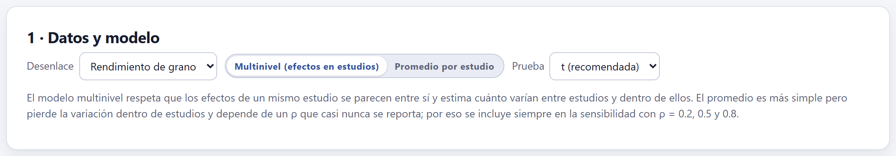
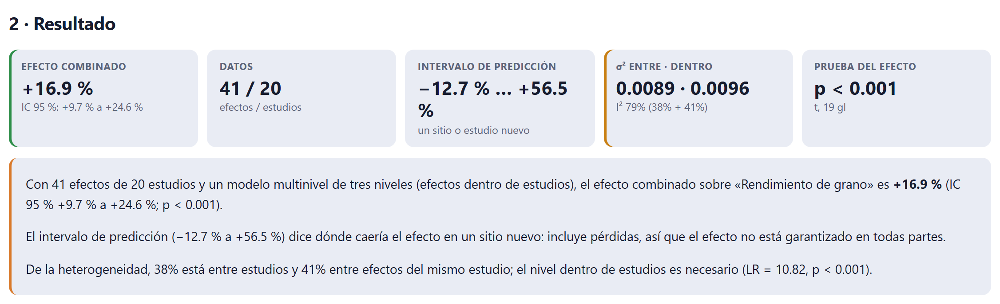
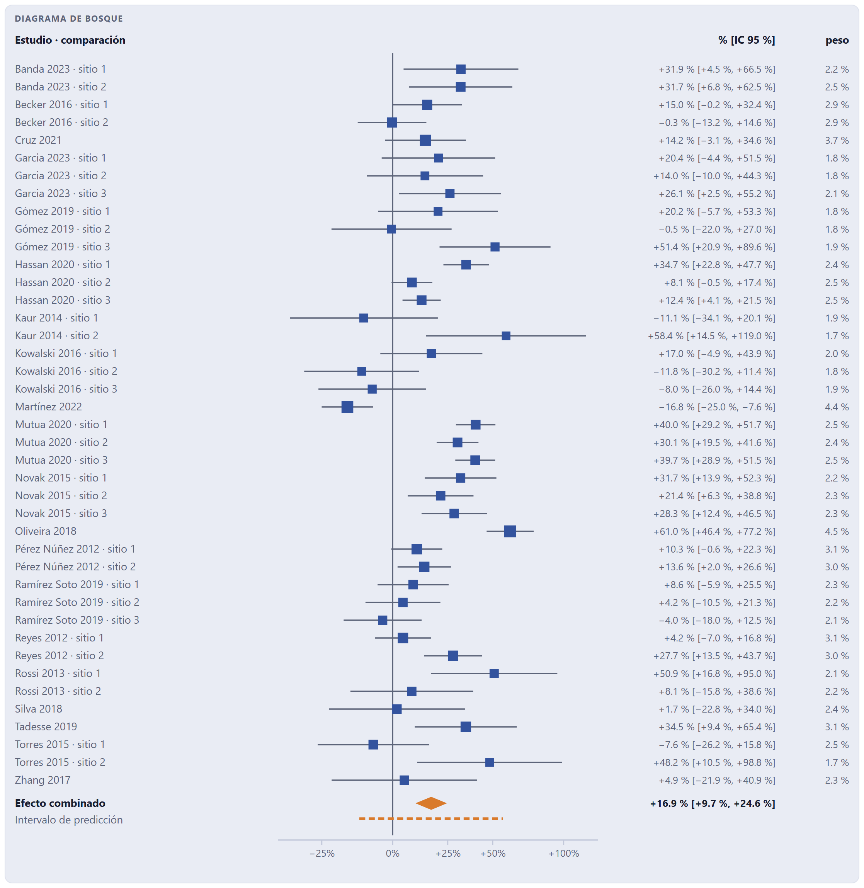
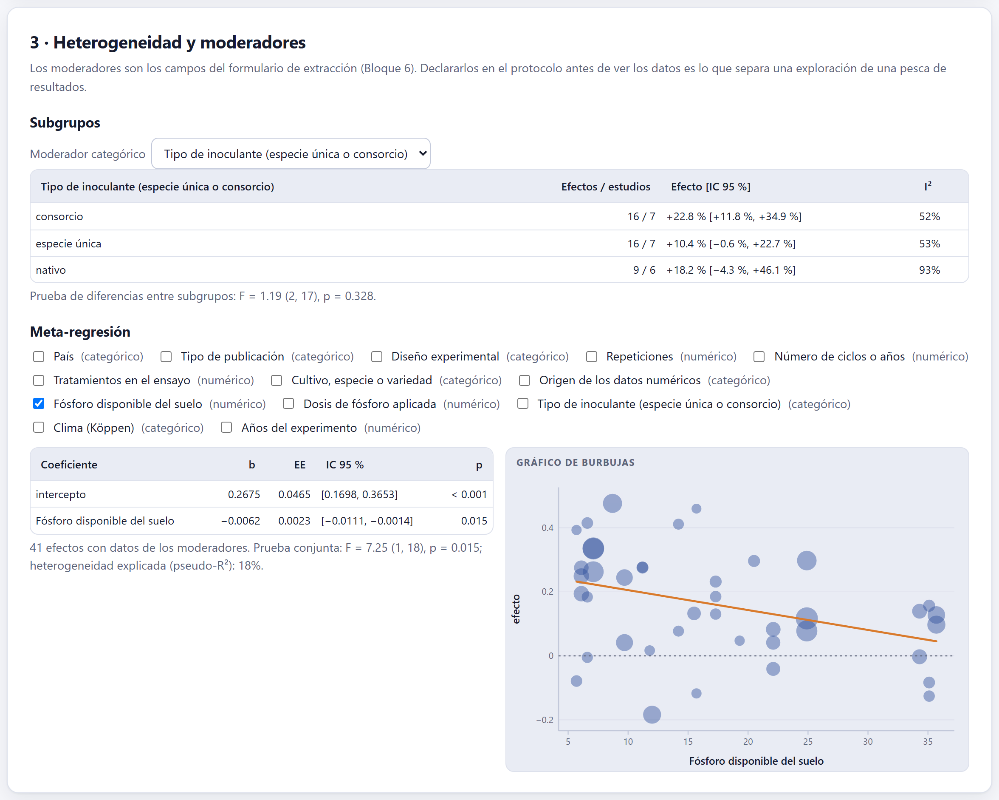
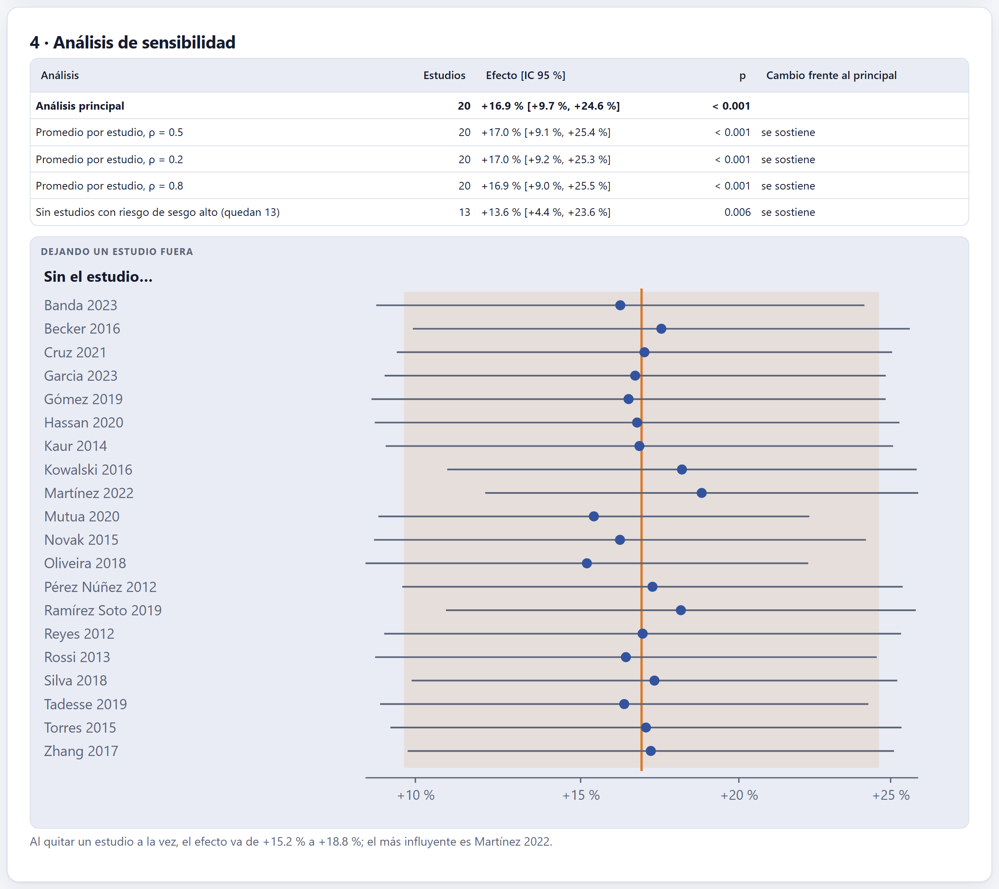
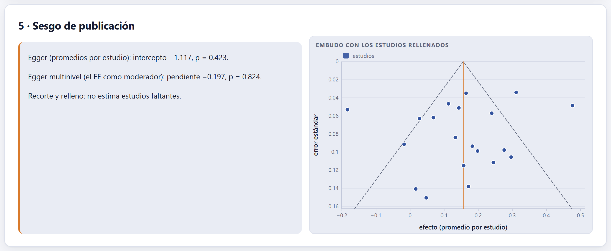
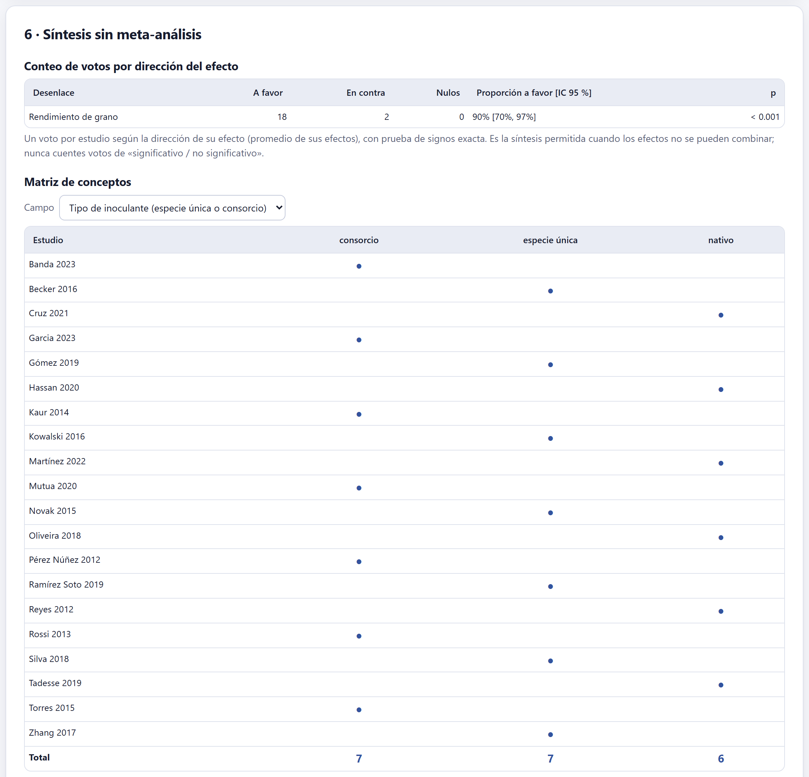
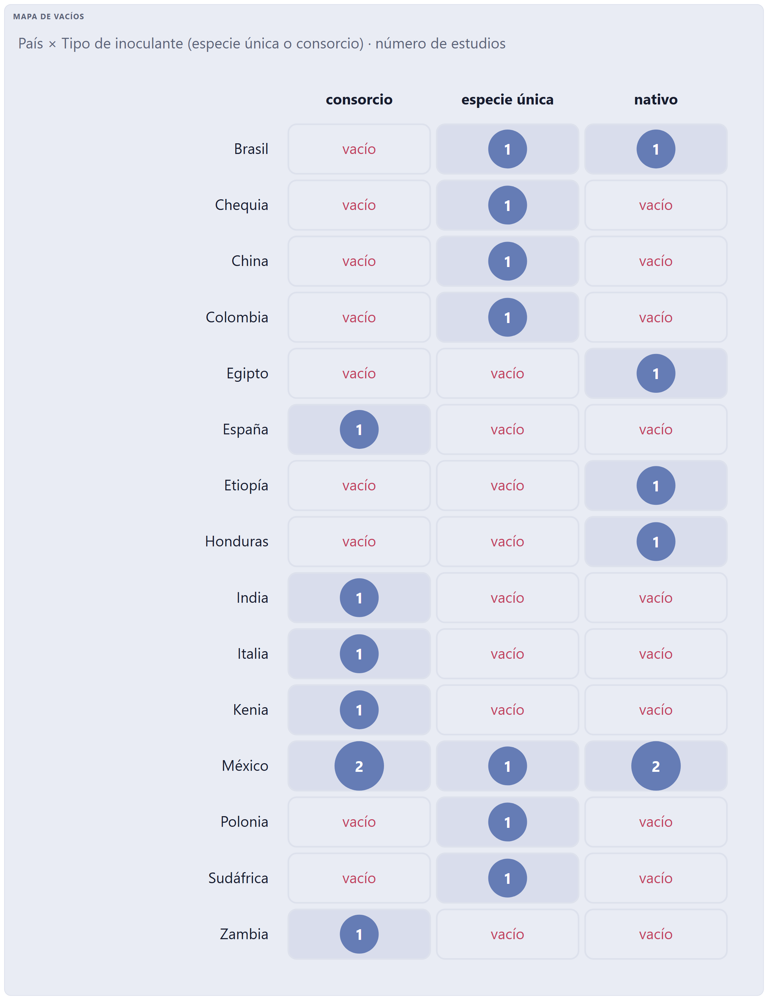
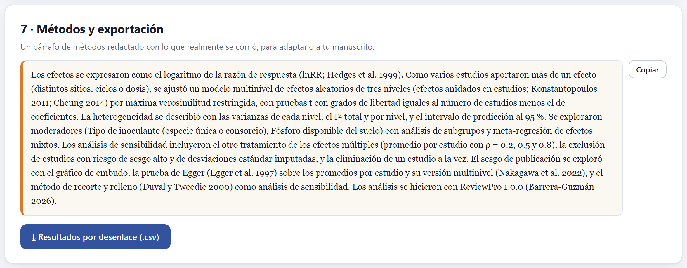

El meta-análisis de cada desenlace con la tabla de efectos del Bloque 6: un modelo multinivel para los estudios que aportan varios efectos (o el promedio por estudio), la heterogeneidad con su intervalo de predicción, los moderadores en subgrupos y meta-regresión, la sensibilidad y el sesgo de publicación. Para las revisiones que no combinan efectos: el conteo de votos por dirección, la matriz de conceptos y el mapa de vacíos. Y un párrafo de métodos escrito con lo que realmente se corrió.

Se trabaja con un desenlace a la vez: los del menú son los que tienen efectos en el Bloque 6. En los experimentos agronómicos casi siempre un estudio aporta varios efectos —sitios, ciclos, dosis— que se parecen entre sí más que a los de otros estudios. Hay dos maneras de tratarlos:
| Multinivel (efectos en estudios) (por omisión) | Un modelo de efectos aleatorios de tres niveles —el error de muestreo de cada efecto, la variación entre efectos del mismo estudio y la variación entre estudios— ajustado por máxima verosimilitud restringida (Konstantopoulos 2011; Cheung 2014). Usa todos los efectos y dice cuánta heterogeneidad hay en cada nivel. |
| Promedio por estudio | Promedia los efectos de cada estudio suponiendo una correlación ρ entre ellos (Borenstein et al. 2009) y combina los promedios con el modelo clásico de efectos aleatorios, con el estimador de τ² que elijas (REML, DerSimonian–Laird, Paule–Mandel, Hedges o ML). Aparece el deslizador de ρ. |
La Prueba t (recomendada) usa grados de libertad iguales al número de estudios menos el de coeficientes, como el ajuste de Knapp y Hartung (2003): con pocos estudios, sus intervalos son honestos; la z los estrecha de más.
Si los tres sitios de un estudio entran como tres estudios independientes, ese estudio pesa el triple y el intervalo de confianza se estrecha como si hubiera más evidencia de la que hay. El modelo multinivel reparte el peso del estudio entre sus efectos. El promedio también lo evita, pero pierde la variación dentro de estudios y depende de un ρ que casi nunca se reporta; por eso la app lo corre siempre en la sensibilidad con ρ = 0.2, 0.5 y 0.8.

| Cifra | Qué dice |
|---|---|
| Efecto combinado | El efecto medio con su IC 95 %; con la razón de respuesta, como cambio porcentual. |
| Datos | Efectos / estudios. |
| Intervalo de predicción | Dónde caería el efecto verdadero de un sitio o estudio nuevo (Higgins et al. 2009). |
| σ² entre · dentro | La varianza entre estudios y la varianza entre efectos del mismo estudio, con el I² total y su reparto por nivel. |
| Prueba del efecto | El valor p, con el estadístico y sus grados de libertad. |
Debajo, la app lee el resultado en palabras: el efecto con su intervalo, lo que dice el intervalo de predicción («incluye pérdidas, así que el efecto no está garantizado en todas partes»), y cómo se reparte la heterogeneidad, con la prueba de razón de verosimilitud de que el nivel dentro de estudios hace falta.

En el bosque, el tamaño de cada cuadrado es su peso en el modelo multinivel: los efectos de un estudio con muchos sitios pesan menos cada uno que un efecto solitario de la misma precisión, porque comparten el peso de su estudio. El eje está en la escala del análisis (logarítmica para lnRR) con etiquetas en porcentaje.
| Si el IC excluye el cero y el intervalo de predicción también | entonces el efecto es consistente: se espera en casi cualquier sitio. |
| Si el IC excluye el cero pero el intervalo de predicción lo incluye | entonces funciona en promedio, pero no en todas partes: busca los moderadores que explican dónde sí (es el caso del ejemplo). |
| Si el IC incluye el cero | entonces no hay evidencia de un efecto medio; no es lo mismo que evidencia de que no hay efecto. |
| Si casi toda la heterogeneidad está dentro de estudios | entonces el efecto cambia de un sitio o ciclo a otro más que de un estudio a otro: las condiciones locales mandan. |

Los moderadores son los campos del formulario de extracción. Declararlos en el protocolo antes de ver los datos es lo que separa una exploración de una pesca de resultados.
La pendiente es −0.0062 por mg/kg de fósforo disponible (IC 95 % −0.0111 a −0.0014; p = 0.015): con 5 mg/kg la respuesta estimada ronda +27 %, y con 35 mg/kg, +5 %. El fósforo explica el 18 % de la heterogeneidad. Es lo que predecía la hipótesis del protocolo, y por eso vale como resultado confirmatorio y no como hallazgo de pesca.
Un moderador compara estudios, no parcelas asignadas al azar: el fósforo del suelo puede ir de la mano del clima, del cultivar o del manejo. Una asociación entre estudios es una hipótesis para un experimento, no la demostración de una causa. Con pocos estudios por nivel o muchos moderadores a la vez, los resultados se vuelven inestables.

La tabla repite el análisis con decisiones distintas y dice, frente al principal, si el resultado se sostiene, cambia la significancia o cambia de signo: el otro tratamiento de los efectos múltiples (el promedio por estudio con ρ = 0.2, 0.5 y 0.8, o el multinivel si el principal es el promedio), sin los estudios con riesgo de sesgo alto del Bloque 7, sin las desviaciones estándar imputadas del Bloque 6 y, con el promedio, con el estimador DerSimonian–Laird. El gráfico dejando un estudio fuera repite el análisis sin cada estudio y nombra al más influyente.

Tres herramientas, sobre los promedios por estudio o sobre todos los efectos: la prueba de Egger (Egger et al. 1997) con los promedios; su versión multinivel, con el error estándar como moderador (Nakagawa et al. 2022); y el recorte y relleno (Duval y Tweedie 2000), que estima cuántos estudios faltarían para que el embudo fuera simétrico, los dibuja en el embudo y da el efecto ajustado. Este último es un análisis de sensibilidad, no una corrección.
| Si hay menos de 10 estudios | entonces las pruebas tienen muy poca potencia: la app las muestra como referencia, no como conclusión. |
| Si los errores estándar casi no varían | entonces la app avisa que las pruebas no son informativas; con lnRR, la varianza depende del efecto y puede crear una pendiente espuria. |
| Si hay asimetría | entonces puede ser sesgo de publicación, pero también heterogeneidad real (los estudios pequeños se hacen en otras condiciones); mira si un moderador la explica. |
Cuando los efectos no se pueden combinar —medidas incomparables, datos incompletos, una revisión exploratoria o narrativa—, la tarjeta 6 ofrece tres herramientas de la guía SWiM (Campbell et al. 2020).



El párrafo de métodos dice qué medida del efecto se usó, qué modelo y por qué, qué prueba, cómo se describió la heterogeneidad, qué moderadores se exploraron, qué análisis de sensibilidad y cómo se exploró el sesgo de publicación, con las referencias de cada método y la versión del programa. Cambia si cambias el modelo o los moderadores. Es un punto de partida para tu manuscrito: en el Bloque 9 se inserta con un clic en la sección de síntesis, y sus referencias entran solas a la lista. ⤓ Resultados por desenlace (.csv) descarga el efecto, su EE, IC, p, intervalo de predicción, varianzas e I² de cada desenlace.
«No hay datos suficientes para este desenlace. Extrae los efectos en el Bloque 6»; «Hacen falta al menos dos subgrupos con datos»; «No hay suficientes efectos con datos de esos moderadores»; los de pocos estudios o precisiones parecidas en el sesgo de publicación; y los de la matriz y el mapa cuando el campo elegido no tiene valores.